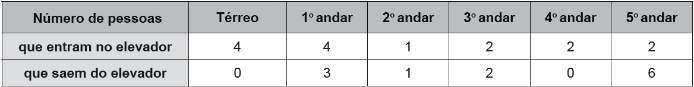

(ENEM 2016 1ª APLICAÇÃO) Ao iniciar suas atividades, um ascensorista registra tanto o número de pessoas que entram quanto o número de pessoas que saem do elevador em cada um dos andares do edifício onde ele trabalha. O quadro apresenta os registros do ascensorista durante a primeira subida do térreo, de onde partem ele e mais três pessoas, ao quinto andar do edifício.
Com base no quadro, qual é a moda do número de pessoas no elevador durante a subida do térreo ao quinto andar?